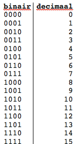

Op deze site krijg je uitleg over binair stelsel, kleurmodellen en...
Het binaire talstelsel of tweetallig talstelsel is een positiestelsel.
Waarin een getal wordt voorgesteld door een rijtje van de cijfer 0 en 1.
Een dergelijk cijfer wordt in deze context een bit genoemd.
In het binaire talstelsel komt iedere positie overheen met een macht van 2.

Home <--link terug naar de homepage-->